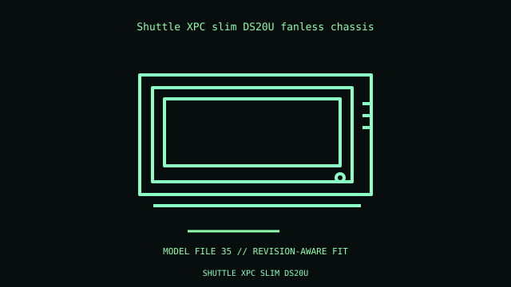

[ IDENTIFIED ENCLOSURE // OFFICE AND MINI-PC ENCLOSURES ]
Shuttle XPC slim DS20U fanless chassis
200 × 165 × 39.5 mm W×D×H; ruggedized 1.3 L fanless system. Proprietary board with soldered Celeron 4205U, DC input and dual LAN; not replaceable standard motherboard.

VARIANT / ARCHIVAL CAVEAT: DS20U3/DS20U5 and regional SKUs vary in CPU/IO. Match rear ports, antenna and adapter; fanless fins need unobstructed airflow.
Mechanical specifications and fit
| Catalog identity / revision | Shuttle XPC slim DS20U fanless chassis |
|---|---|
| Dimensions / construction | 200 × 165 × 39.5 mm W×D×H; ruggedized 1.3 L fanless system. |
| Drive bays / storage | One 2.5-inch bay and M.2 storage on supported DS20U configurations. |
| Board, system and compatibility | Proprietary board with soldered Celeron 4205U, DC input and dual LAN; not replaceable standard motherboard. |
| Revision / service note | DS20U3/DS20U5 and regional SKUs vary in CPU/IO. Match rear ports, antenna and adapter; fanless fins need unobstructed airflow. |
Preservation and installation notes
Identify the exact service tag or machine-type/model and preserve its board, thermal module, adapter, antenna and mounting hardware as a matched system.
- Photograph the complete model label, assembly revision and option identifiers before opening; keep matching covers, brackets, shields, trays and fasteners together.
- An office mini-PC enclosure is not a generic motherboard case; use only the documented model/revision parts and specified power adapter.
Manufacturer manuals and model-specific sources
- Shuttle XPC slim DS20U fanless chassis manufacturer specifications / product referenceModel-specific manufacturer specification, owner/service manual or technical reference; verify exact model and revision.
- Shuttle XPC slim DS20U fanless chassis manual and service documentationModel-specific manufacturer specification, owner/service manual or technical reference; verify exact model and revision.
Where normalized dimensions or option-specific limits are not published, the record states that limitation rather than asserting a generic fit. Verify the cited manual revision against the specimen.